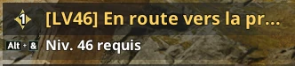
Quêtes principales
Toutes, intégralement. Donnent aussi des Pierres d'amélioration.
Aion 2 · Guide de progression · Mis à jour le 2 octobre 2026
Tout faire pour passer 1400 de GS avant d'utiliser ses Odyles, coûte que coûte.
L'ordre à suivre, étape par étape.
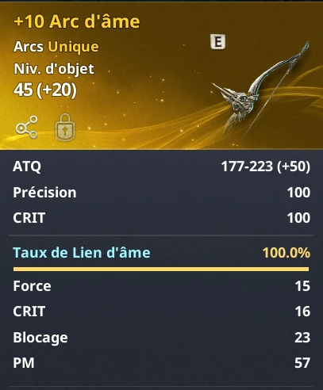
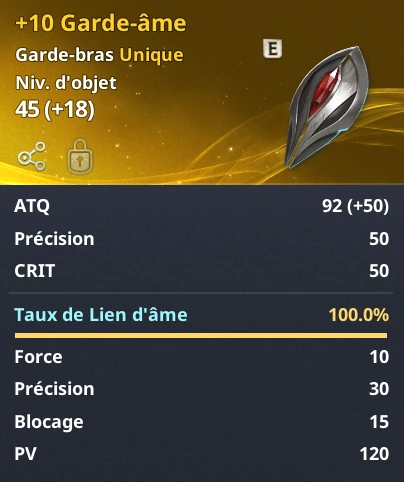
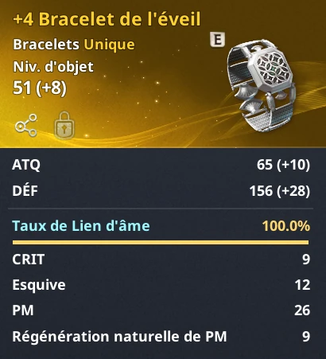
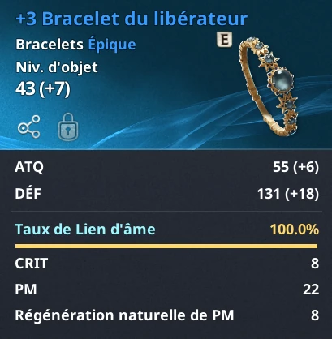
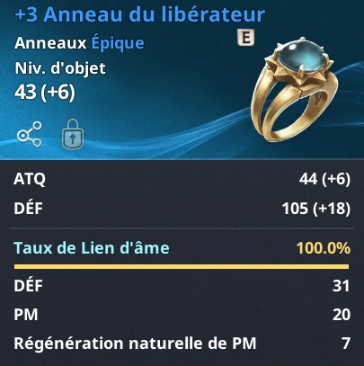
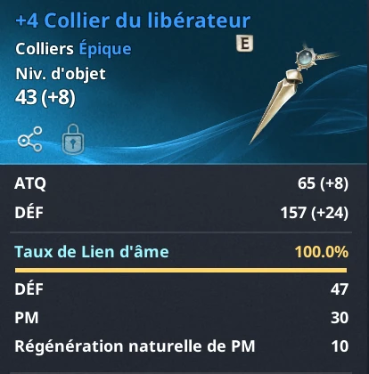
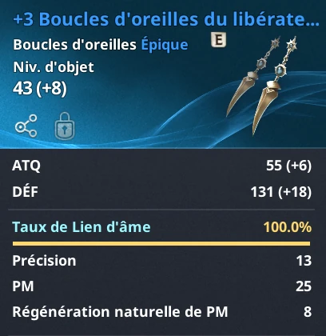
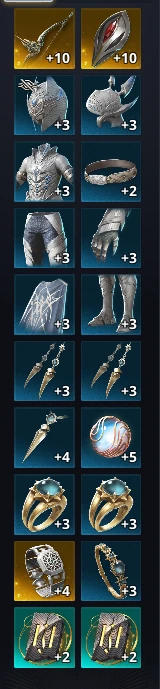
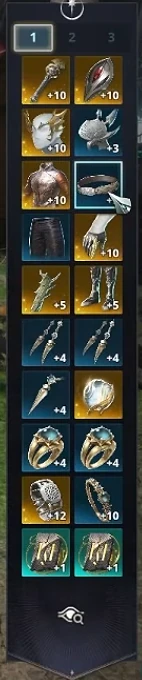
À faire intégralement.

Toutes, intégralement. Donnent aussi des Pierres d'amélioration.
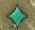
Toutes les quêtes vertes : Skill points + Pierres d'amélioration.
TOUS finis → Daevanions + Skill points + Pierres d'amélioration.
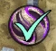
Monter le Monolith au niveau 30, puis arrêter.
À monter au fil de la progression principale, avant d'arriver à 1000 GS.
Amulette
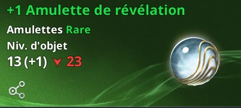
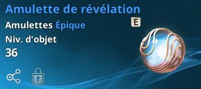
Ceinture
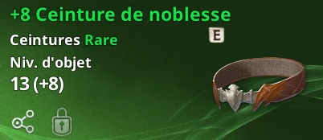
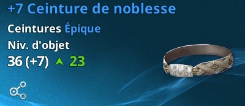
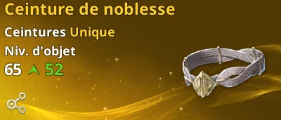
Monter la pièce verte à +10 pour la passer en bleue, puis la bleue à +10 pour la passer en jaune (Gold).
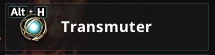
Le Transmuter sert à passer la pièce à +10 à la qualité supérieure. Raccourci : Alt + H, ou via le menu avec Échap.
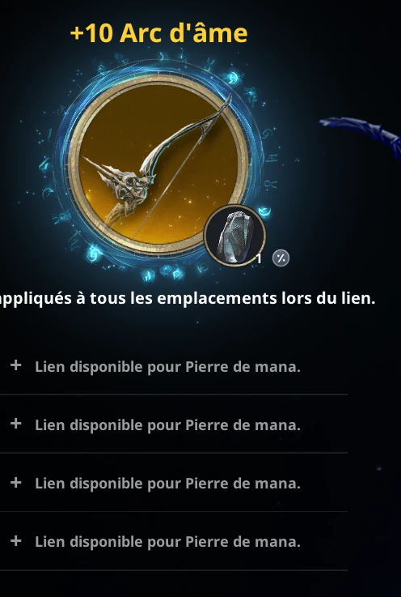
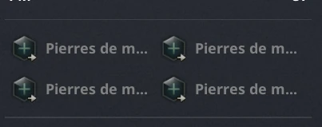
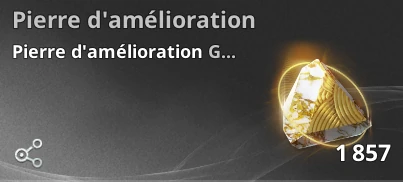
2h · 5h · 8h · 11h (am & pm)
À faire.
Progression lente, GS gratuit via les Daevanions.
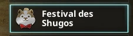
À faire en masse → achat de Daevanions.
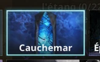
Stage 1, puis 2, puis… → achat de Daevanions.
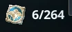
Le compteur (ex. 6/264). Chaque Daevanion = du GS gratuit.
Utiliser ses Odyles avant 1400 GS. On les garde, coûte que coûte.
Farmer les plumes au-delà du Monolith 30 : totalement inutile pour l'instant.
Monter les runes au-delà de +2 sans en avoir en surplus : elles peuvent se briser en cas d'échec.
Faire les bastions côté Elyos pendant la rift : seulement les donjons scellés.
Lancer les daily dungeons sans buff : moins de mobs tués = moins de pierres.
Laisser des emplacements de Pierres de mana vides.
Dans l'autre camp (Elyos) : on dodge.
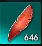
Inutiles au-delà du Monolith 30 (pour l'instant).
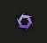
Très compliqué (campé par des rangers), pas rentable.
Cochées dans ton navigateur. La quotidienne se vide toute seule au reset du jour, l'hebdo au reset du mercredi.